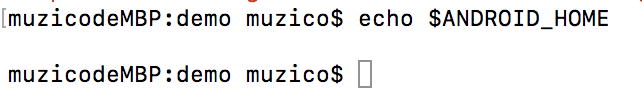
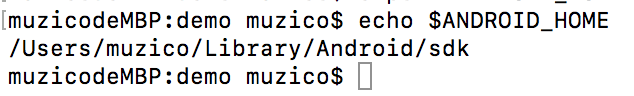

RN 打包 Android项目（for Mac）
为了展示全貌，所以从头到尾过一遍。
官方文档：
https://reactnative.cn/docs/0.51/signed-apk-android.html
实践过程中与官方文档有差异。
1.创建项目，该项目就叫做 'demo'：
react-native init demo
2.根据提示进入项目目录下：
cd /Users/muzico/Documents/Project/reactnative/demo
3.然后执行项目看看
react-native run-android
如果出错了，应该有东西没有设置啊，还好出错了，不然怎么说下去啊！
实际上这个问题是没有找到ANDROID_HOME 环境变量值，而该值则是记录着Android SDK的地址。
4.通过 echo $ANDROID_HOME 命令可以看到该值当前是什么内容：
echo $ANDROID_HOME

是空白的，果然没有内容啊。
然后我们通过命令来为 ANDROID_HOME 进行赋值：
export ANDROID_HOME=~/Library/Android/sdk
5.然后我们用之前的命令来查看是否已经设置成功了。
echo $ANDROID_HOME

好的，没有问题了。
然后，要么把Android 模拟器打开，或许连接上Android 真机设备。
不然无法进行下一步哦，这个很重要。
6.上面的东西都弄好了，那么就来跑项目吧。
react-native run-android

看到这个内容，说明已经成功了。
项目已经跑起来了，这个时候可以看看模拟器（或真机）。
嗯，没有什么问题了。
接着就是来搞搞打包的事吧。
根据某文档：
https://reactnative.cn/docs/0.51/signed-apk-android.html#content
1.生成一个签名密钥
keytool -genkey -v -keystore my-release-key.keystore -alias my-key-alias -keyalg RSA -keysize 2048 -validity 10000
上面的命令会生成一个名为 my-release-key.keystore 的文件，有效期为10000天。 --alias参数后面的别名是你将来为应用签名时所需要用到的，所以记得记录这个别名。
然之后把这个文件移到项目里面的 /android/app 路径下。
2.添加签名到项目的gradle配置文件
编辑你项目目录下的android/app/build.gradle，添加如下的签名配置：
...
android {
...
defaultConfig { ... }
signingConfigs {
release {
storeFile file(MYAPP_RELEASE_STORE_FILE)
storePassword MYAPP_RELEASE_STORE_PASSWORD
keyAlias MYAPP_RELEASE_KEY_ALIAS
keyPassword MYAPP_RELEASE_KEY_PASSWORD
}
}
buildTypes {
release {
...
signingConfig signingConfigs.release
}
}
}
...
4.生成发行APK包
cd android && ./gradlew assembleRelease